有些人不做点什么，心里就踏实不下来。但是开始做的事情，都是没法让人心里踏实的。
我们前段时间总在提一个概念“实感”，可是什么叫实感呢？实际的感觉，还是一种感觉让你认为所见所得所捕获，都是实际存在的。
托克维尔这样剖析平等导致民主制下人人多怀奋进之心而少有大志：
所有的人不管能力如何，都不得不在同一个筛子上过来过去，统统经过许许多多预备性的小小实习或训练，从而浪费了自己的青春，使自己的想象力消失。因此，他们不再认为自己有能力充分享用他们有望得到的好处了，而他们终于有能力做一番大事业时，则已经失去了兴致。在人们不断忙于私人生活的琐碎小事当中，使奋进之心失去其推动作用和崇高目标；人们的激情既没有昂扬又没有低落，结果使社会一天一天地走向看来十分安宁但缺乏大志的状态。
不知道究竟怎么做这种推导。只是觉得，这一类的推导在揭示深刻的内容。给“卷”换一个表达方式。
老实说，一些梗慢慢兴起又消亡的过程。现实生活充实的人并不会对这些多么感兴趣，从很近的县长来啦、很有精神到黑人抬棺、陈道明：“忘了”，到上古时代的林林总总。纯粹而不主动跨界的人不会对这些感兴趣，史前标志物就是万青那个周转下的了。
最近听到了一个不错的乐队，又是河北人民艺术家。thePainter画家，地属邢台
要我说，这个抹茶卷每涨价一毛钱，对我都是不小的压力；每降价一毛钱，我都觉得能一个月下来薅好多回来


如果只是一个房间、逆旅，偶尔有人进来保持呼吸、心率、血压在一段时间内和普通人没什么两样。我住的地方应该有我住过的痕迹，在这里写的东西、在这里玩的室内设计。我也得凭自己的摆件，重新校准一遍当下的心理防线建设。总之，想要找到像我的

学长LForeverYly在房间里也自己做饭。不知道一周过去了，我作为工具人去一起采购的各种东西有没有吃完

搞了一些泡面在寝室里。久闻这边会进各种各样的速食拉面。等我想好了用什么方法来调零、控制变量，然后再开始我的测评不迟
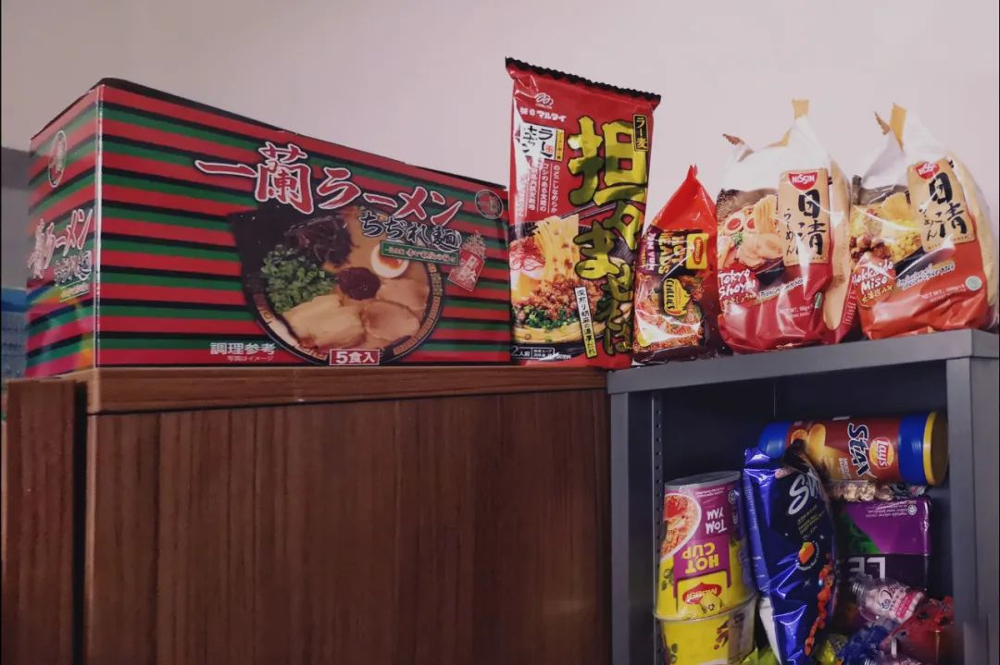

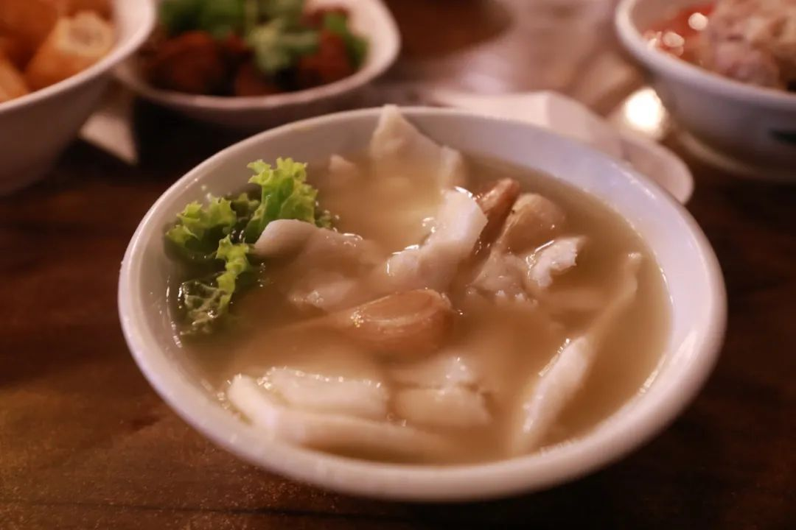

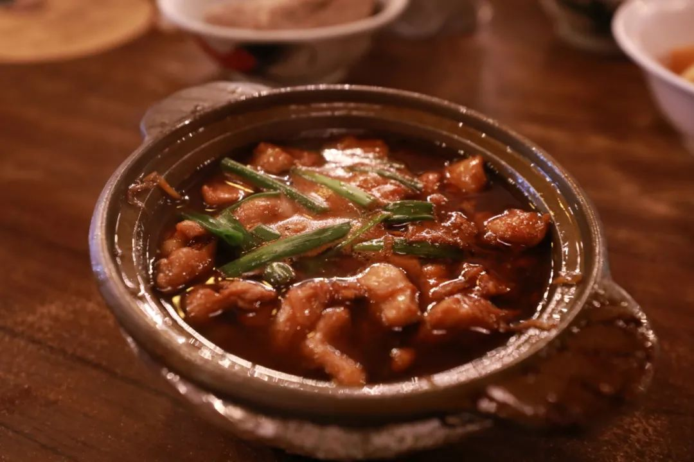


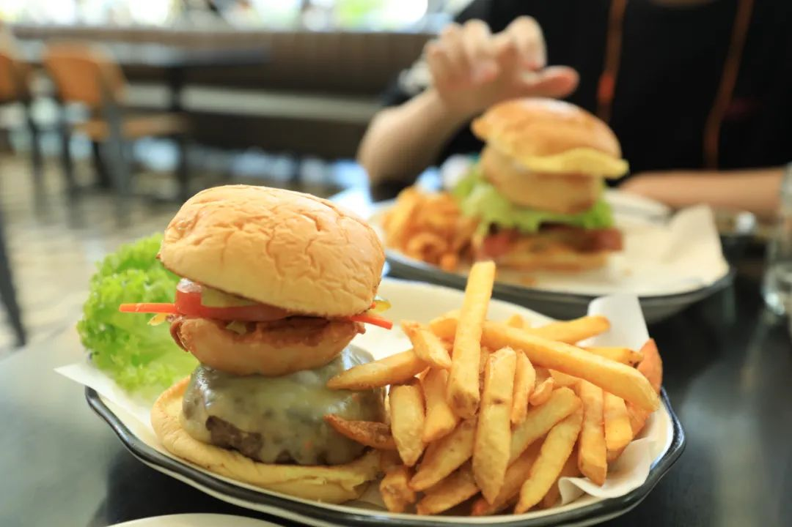

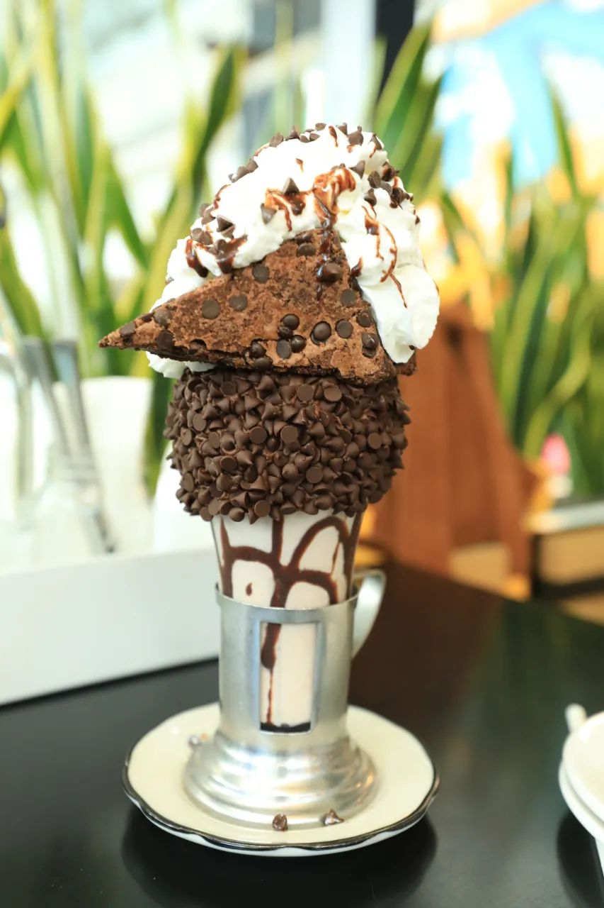
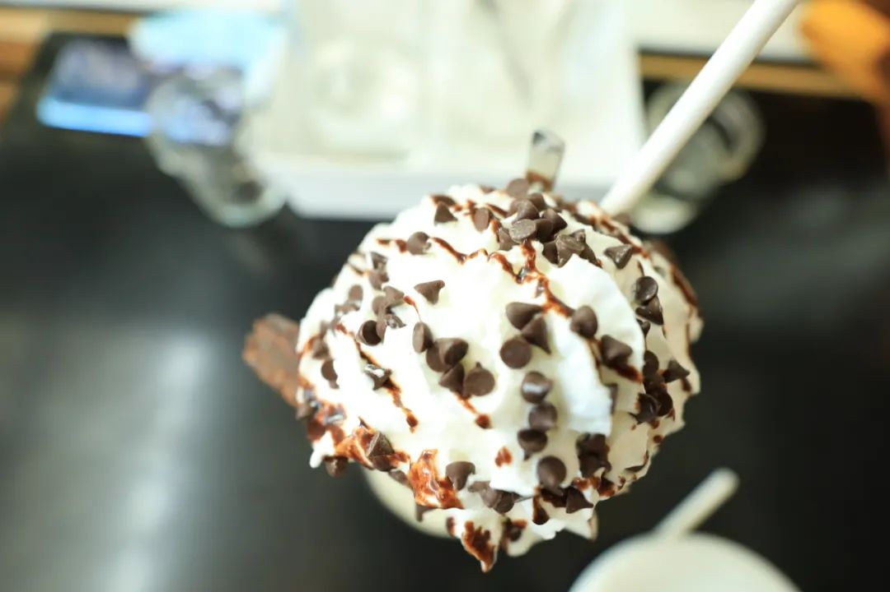

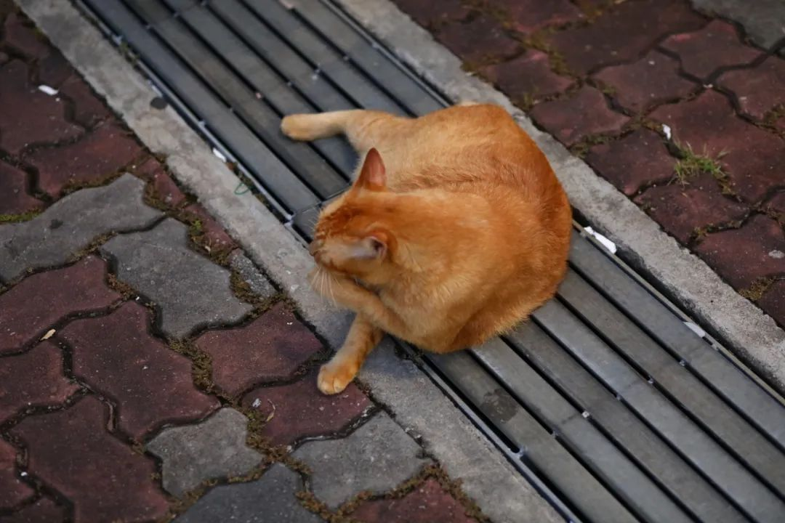


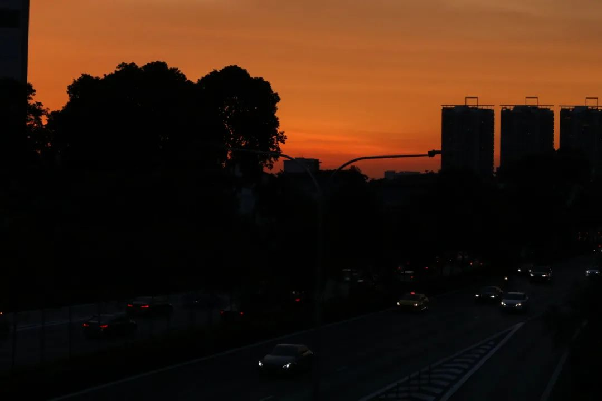
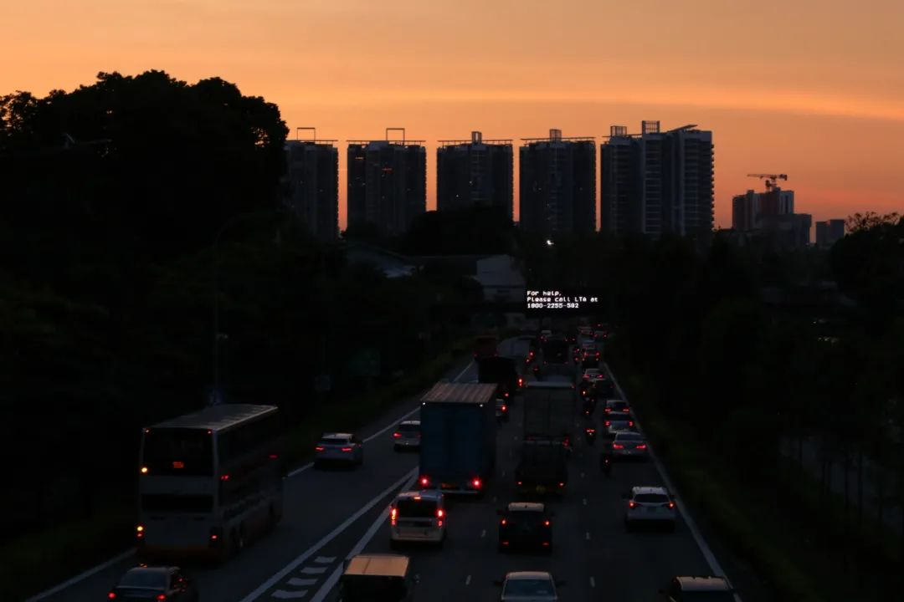
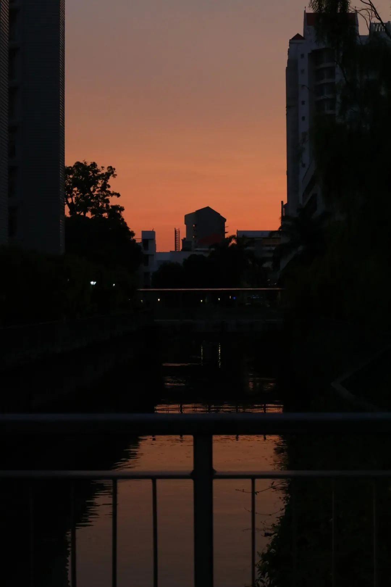


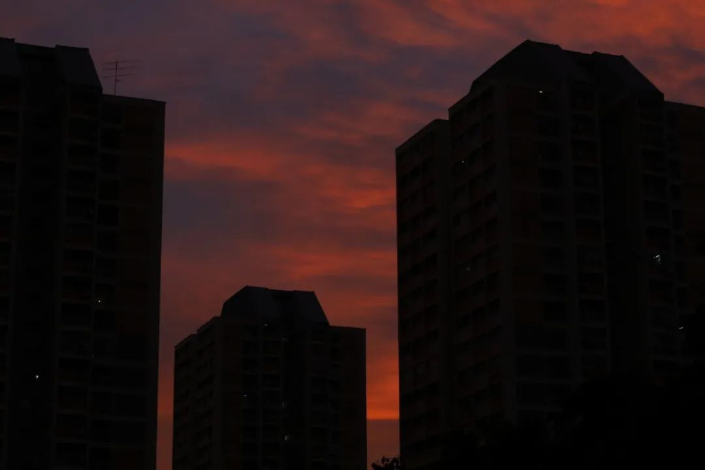
喜欢一种风格的照片就不不要想着拒绝ta，拍到我不想拍了再说。就像现在在我发的照片里很少出现的那种长车轨流光曝光一样，拍到吐

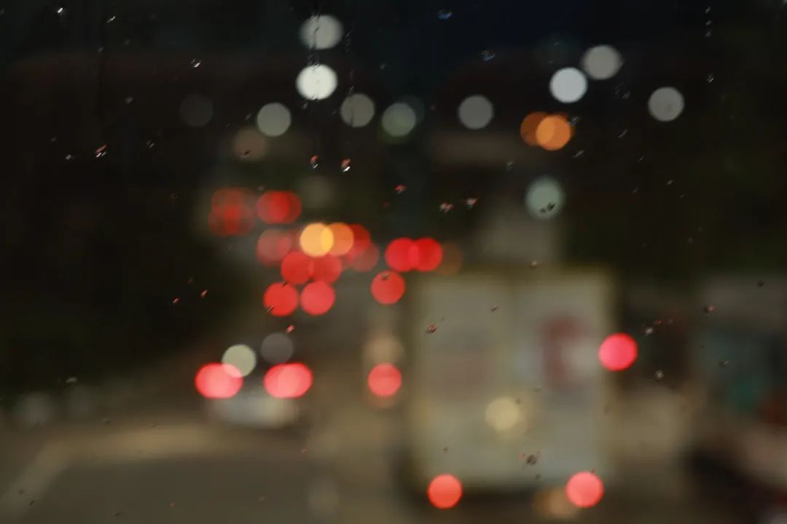


下次换一个吐